CONTENIDO DE LA SEMANA. INTRODUCCION AL DESARROLLO CON REACT
-Qué es React: Framework Fronted
-Historia de React.JS
-¿Cómo funciona React?
-Documentación de React
-Herramientas de React
-Herramientas de React
Qué es React: Framework Fronted

Historia de React.JS
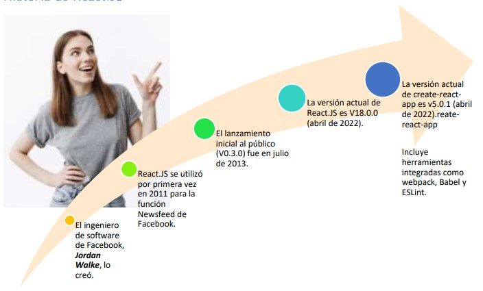
¿Cómo funciona React?

Documentación de React
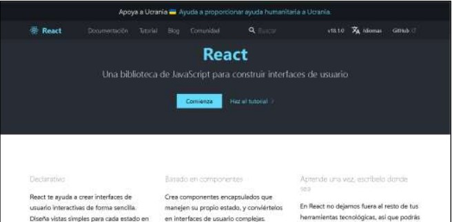
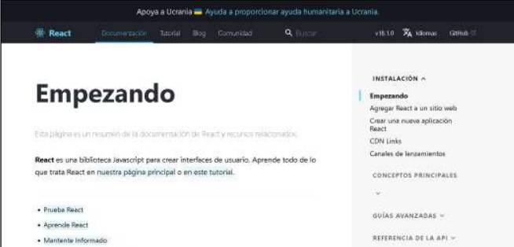
Herramientas de React
Ecosistema de Desarrollo con React - Dependencias Incluso podríamos crear nuestros propios ambientes de desarrollo, pero no es conveniente porque la diversidad de configuraciones genera mayor complejidad. Algunas herramientas que se utilizan son: Babel, Parcel, Webpack.
*Babel JS
Babel es una herramienta que transforma nuestro código JS de última generación (o con funcionalidades extras) a un código de Javascript que cualquier navegador o versión de Node.js pueda entender. Tranforma Typescrip, JSX, etc https://babeljs.io/
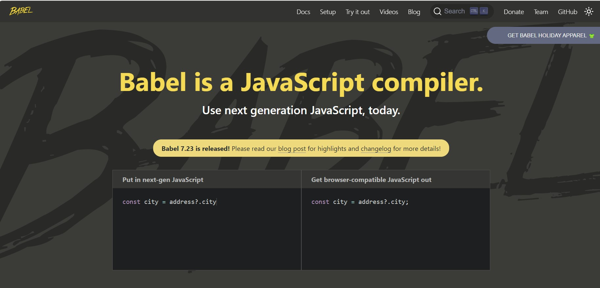
*ESLint
Es una herramienta de software que revisa y "observa" tu código en busca de errores que puedan afectar tu código. Algunos "linteres" incluso pueden darte sugerencias de como arreglar el error o incluso arreglarlo ellos mismos..
https://eslint.org/
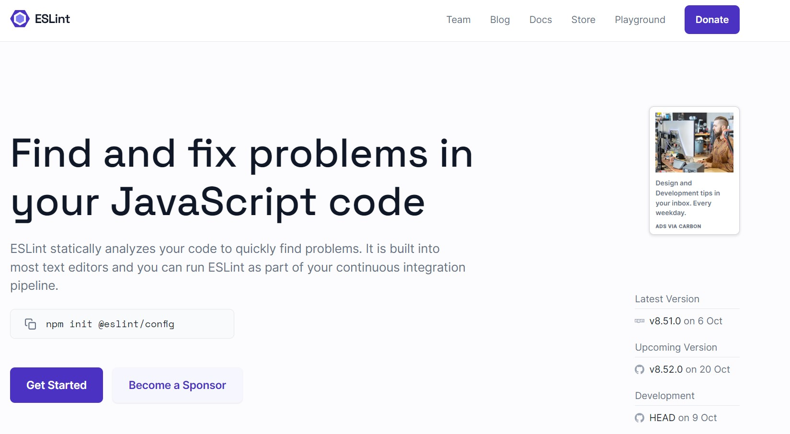
*Sass / Scss
SASS Syntactically Awesome Stylesheets (definido como CSS con superpoderes) es un metalenguaje de hojas de estilo. Éste es un lenguaje de script que es traducido a CSS. SASS es el pre-procesador, mientras que SCSS es la sintaxis de CSS pero con todas las ventajas de SASS.
https://sass-lang.com/
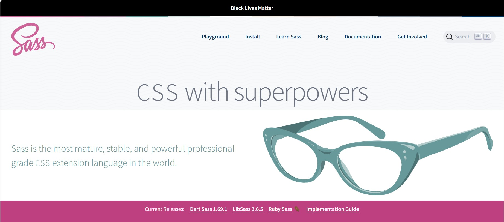
*Font Awesome
Font Awesome se utiliza para sustituir imágenes de iconos comunes por gráficos vectoriales convertidos en fuentes. No es necesario el uso de Javascript para su funcionamiento y dispone de una versión gratuita y otra de pago.a CSS.
https://fontawesome.com/
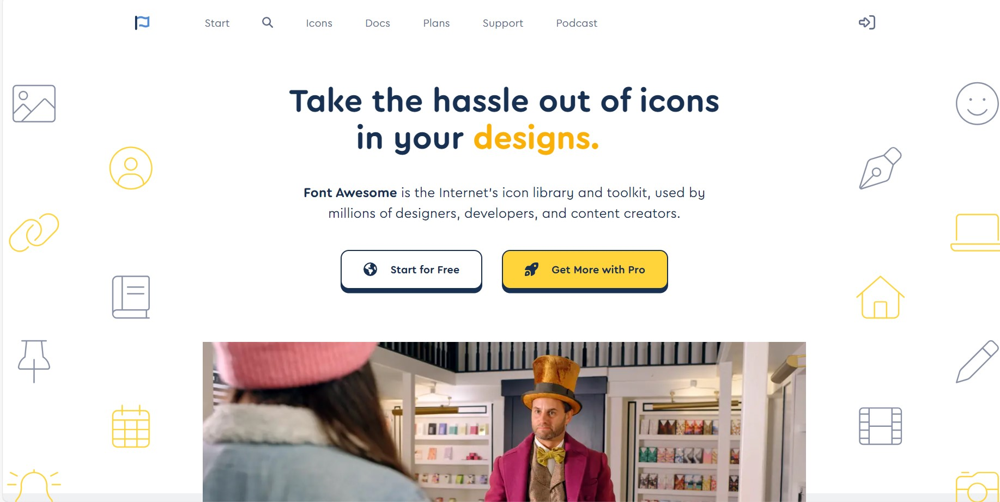
*Favicon Icon
Un favicon es un pequeño icono (normalmente de 16×16 píxels o de 32×32 px) que se utiliza para identificar un sitio web en las pestañas de un navegador, en un listado de favoritos, o en cualquier otra parte que requiera una identificación pequeña.
https://favicon.io/
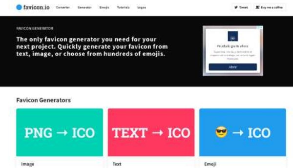
* Webpack
Actualmente el desarrollo web utiliza múltiples dependencias, por lo que Webpack convierte esas dependencias en archivos que pueda entender el navegador de una manera más rápida e interoperable.
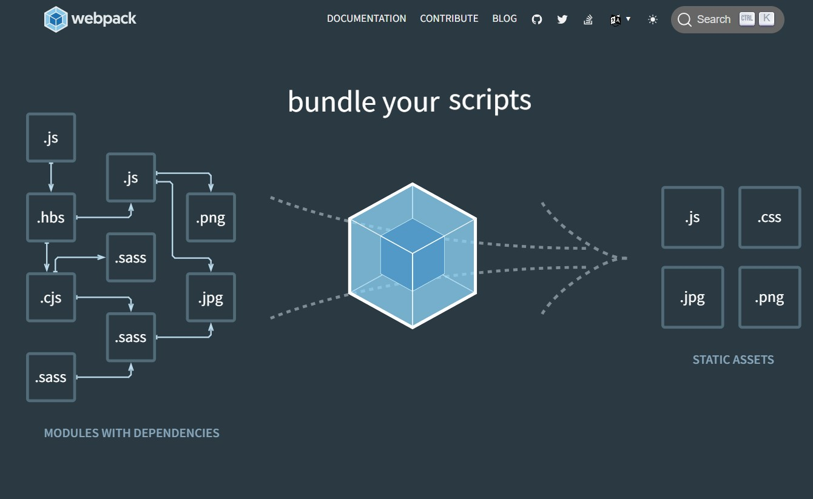
Para el desarrollador es mucho más cómodo trabajar con archivos separados y con un
diseño arquitectónico modular. Es común que una aplicación web contenga archivos css
en plano, archivos de preprocesadores como Saas o Less, archivos en TypeScript, entre
otros. Webpack nos ayudará a transpilar todos estos archivos y entregarlos al navegador
para que este los entienda.
https://webpack.js.org/
Herramientas de Instalación de React
Si hiciste una aplicación medianamente grande con React.js seguramente tuviste que configurar Babel, Webpack, un linter (ESLint?), un servidor de render, etc, etc., y de seguro sufriste la conocida Fatiga de JavaScript.
Manualmente es muy tedioso y requiere revisar información de compatibilidad de las diferentes versiones, por lo que se hace necesario el uso de herramientas de instalación. Se usa herramientas con el objetivo de NO tener que preocuparte por la configuración Las principales herramientas son:
➢ Create-react-app
➢ Vite
➢ Remix Run
➢ NextJS
➢ GatsbyJS
➢ BlitzJS
➢ Hydrogen
Este este documento se revisarán sólo las 3 primeras herramientas.
Create React App:
Configura tu ambiente de desarrollo de forma que puedas usar las últimas características de Javascript, para una buena experiencia de desarrollo, y optimizando tu aplicación para producción. Requiere Node >= 14.0.0 y npm >= 5.6.
https://create-react-app.dev/
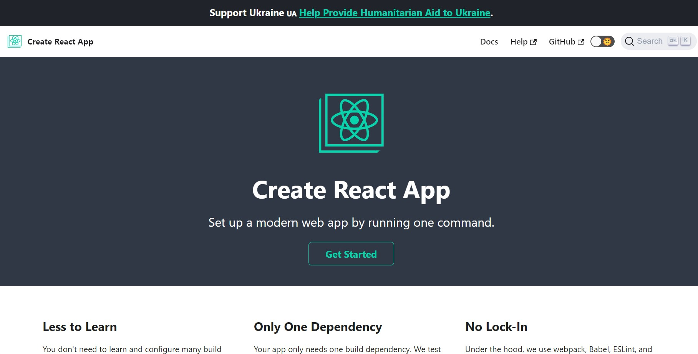
Vite:
Vite se define como una herramienta de frontend que te ayudará a crear tus proyectos de forma agnóstica (sin atarte a ningún framework concreto) y que su desarrollo y construcción final sea lo más sencilla y cómoda posible. Está desarrollada por Evan You, el creador de Vue.
https://vitejs.dev/
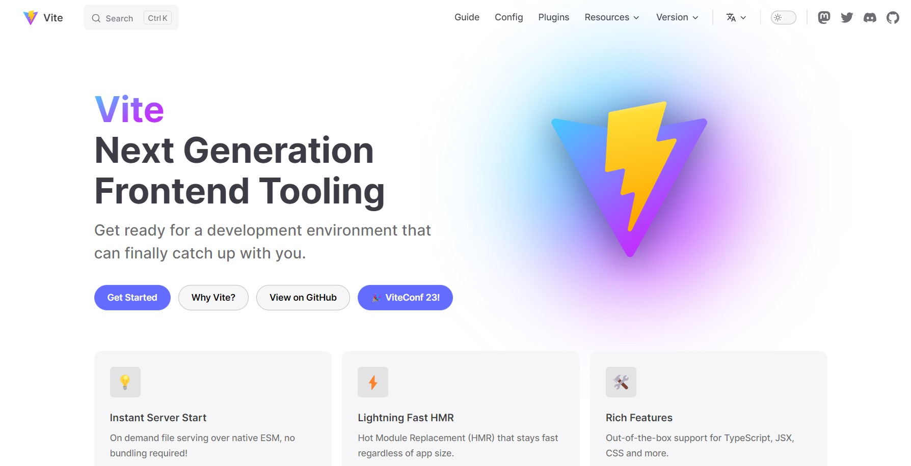
Next.js:
Next.js es un pequeño framework construido sobre React.js que viene a ayudar a reducir esta fatiga. ¿Cómo? Next nos permite, instalando una sola dependencia, tener configurado todo lo que necesitamos para crear una aplicación de React usando Babel, Webpack, server render y muchas otras técnicas como HMR o separación de código y… ¡hasta hace más fácil hacer deploy de nuestras aplicaciones!
https://nextjs.org/
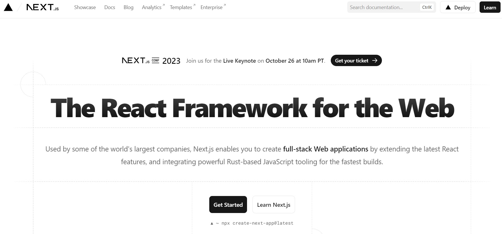